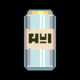

⚠ 알림 : 전에 쓰던 네이버 블로그 글을 옮겨왔기 때문에, 일부 오류가 있을 수 있습니다. 참고 ⚠
02:43
새벽까지 친구들과 게임하고 유니티를 키려다가, 음악도 들으면서 하려고 유튜브에 들어갔다.
그리고 어김없이 섬네일에 이끌려 여러 영상을 보다가, 댓글을 몇 개 달았다.
‘그동안 내가 무슨 댓글을 달았더라’
갑자기 궁금해져서 찾아봤다.
‘몽환적인 노래 모음집’ 이라는 영상에 왜 댓글을 왜 달았나 하고 열어보니
그 영상 댓글 중, 몽환적인 느낌의 음악 장르를 소개해 주는 댓글을 나중에 다시 보려고 와드해둔 것이었다.
소개해 주는 장르 중 사이버펑크(Cyberpunk) 가 있었는데, 그 장르의 ‘2814’ 라는 곡을 추천하길래 들어보다가
유튜브에 Cyberpunk 라 검색하고 다른 음악들도 찾아봤다. (2021기준 이제 Cyberpunk 2077 영상만 나온다)
그중 테일즈위버의 Ost ‘Second Run’ 같은 이름을 가진 영상이 있길래
내가 알고 있는 Second Run 인가하고 들어보기로 했다.
알고 보니 ‘VA-11 HALL-A - Second Round [Full Album]’ 라는 영상이었다.
Second ‘Round’ 인거 방금 쓰면서 알게 되었다.
Second ‘Run’ 이 아니었다.
처음 도입부부터 인상적이었다.
전혀 들어보지 못한 풍의 음악이었다.
이게 Cyberpunk 인가?
음악만 들으면 손과 눈이 심심하니 댓글을 읽었다.
‘When a game opens up with a message telling you to get food before jumping in, you know it’s going to be beyond chill.’
이라는 댓글이 있었다.
영어를 잘못하기에, Beyond 와 Chill을 검색한 후 열심히 머리를 굴린 결과
‘게임이 켜지면서 시작하기 전에 음식을 챙기라는 메시지가 뜰 때, 너는 이제 소름 돋을 거라는 걸 알 거야’로 해석되었다.
아님말구
아무튼 이건 게임 음악이었다.
처음에는 Second ‘Run’ 이니까 테일즈위버를 말하는 건가 싶었지만,
네이버에 ‘VA-11 HALL-A’ 를 검색해보니, 테일즈위버가 아닌 다른 게임이 나왔다.
‘VA-11 HALL-A’, 발할라라고 부르는 게임이었다.
언젠가 네이버 게임 포스트에서 본 적이 있는 게임인 것 같다.
무슨 게임인가 궁금해서 영상들을 찾아봤다.
image (2) (사진 못 찾음)
댓글에서 봤던 그 장면이다.
이거 찾다가 다른 영상 섬네일에 이끌려서.. 그렇게 4시 34분이 됐다.
왜 쓰려고 했는지 기억이 안 나서 끝
이_사진을_왜_다운받으셨나요 (사진 못 찾음)
2019 09 29 22:34 수정_ 재밌다.
VA11 Hall-A 는 나의 인생 게임이다!
음악도 음악이지만 배경설정이나 스토리, 도트 그래픽, 등장인물, 특유의 개방감과 가벼움이 정말 마음에 든다.
또, VA11 Hall-A 는 나를 사색하게 만들었다.
과연 어디까지를 게임이라 할 수 있을까?
나는 게임이 재미있는 이유가 성취감을 느낄 수 있기 때문이라고 생각했다.
RPG나 MOBA 장르에서는 상대를 이기거나, 상대보다 강해짐으로써 성취감을 느끼고..
퍼즐이나 플랫포머 장르에서는 스테이지를 하나하나 클리어 해나가면서 성취감을 느끼고…
하다못해 미연시에서도 현실에 없는 미소녀를 애인으로 만든다는 성취감이 있다.
반면 VA11 Hall-A 는 어떤가?
생각해보면 그렇다.
이 게임은 바텐더 ‘질 스팅레이’ 의 시점에서 손님들의 이야기를 듣는 게임이다.
술 섞기 (만들기), 방 꾸미기, 미니게임, 도전과제, 선택지, 멀티 엔딩이 분명 존재하는 게임이지만,
결국 이 게임을 하는 목적은 손님들의 이야기를 듣는 것이지, 다른 것이 아니다.

또, 플레이어는 이 이야기에 큰 영향을 줄 수 없다.
유일하게 뭔가 변화를 줄 수 있다면, 술을 만들 때 카모트린을 잔뜩넣어 손님을 취하게 만들 수 있다.
하지만 달라지는 건 손님들이 얼굴이 빨개지고, 평소와는 다른 특별한 이야기를 한다는 것 뿐이다.
정말 이야기를 듣는 것 말고는 없는 게임이다.
이야기를 듣는 다는 것이 과연 성취감이 있는 일인가?
고민 상담 같은 일을 하는 사람이라면 그럴 수 있겠지만,
여기서는 그냥 손님들의 이야기를 듣기만 한다. 대답도 ‘질 스팅레이’ 가 한다.
플레이어는 아무것도 하지 않는다. 가끔 손님에게 술 하나 섞어 만들어주는게 전부다.
그저 과자 한 봉지를 먹으며, 마우스 클릭이나 키보드로 대화창을 넘기며 다음 이야기를 본다.
과장 좀 보태고, 배경 음악있고, 삽화 몇 개 있는 소설책이라 봐도 무방하다.
비주얼 노벨? 인터렉티브 무비?
이 게임은 뭐라고 불러야 할까?
이걸 게임이라 부를 수 있을까?
난 VA11 Hall-A 가 게임이라는 사실을 부정하고 싶은 것이 아니다.
분명 VA11 Hall-A 는 게임이다. 나 자신이 그렇게 느낀다.
그런데 VA11 Hall-A는 평소 내가 생각하던 게임이라는 개념과 많이 달랐다.
그래서 혼란스러웠다.
과연 어디까지가 게임일까?
흔히 게임을 ‘상호작용 가능한 영화’ 라는 비유를 본적이 있고, 나도 공감하던 말이다.
하지만 드래곤볼 극장판에 손오공이 “지구인들아 나에게 힘을!” 하고 원기옥을 모으는 장면에서
관객들에게 버튼 하나 쥐어주고 ‘버튼 누를 때 마다 손오공에게 힘을 보탤 수 있습니다” 하고 자막 띄워주면
상호작용이 있는 영화니까, 이것도 게임이라고 말할 수 있나?
물론 선택지가 없는 일방적인 상호작용이긴하다.
그렇다면 관객이 영화 중간중간 투표를 하고 그 결과에 따라 이야기의 흐름이 달라지는 건 어떤가.
이건 게임인가 영화인가? (인터렉티브 아트, 인터렉티브 무비)
게임의 사전적 의미를 검색해봤다.
규칙을 정해놓고 승부를 겨루는 놀이라고 한다.
더 혼란이 온다.
VA11 Hall-A 에 규칙이 있는가? 그래 뭐.. 개발자들이 만들어 놓은 규칙 속에서 게임을 즐긴다.
그럼 VA11 Hall-A 에 승부가 있는가? 나는 없다고 본다.
SE-8a9e1c4b-940f-4547-bd1e-a72dda6bb83c (사진 못 찾음)
물론 나는 우리나라에서 ‘비디오 게임’ 을 ‘게임’ 으로 줄여 부른다는 사실과,
본래 게임은 운동, 스포츠 경기에서 쓰이던 단어라는 사실을 안다.
그렇기 때문에 더욱 궁금하다.
현대 문화에서 비디오 게임은 어떻게 정의되고 받아들여지고 있는가?
많은 사람들이 공감하지는 않더라도, 그렇게 생각하지 않더라도
최소한, 내가 생각하는 게임의 정의를 정의해보고 싶었다.
그렇게 다음과 같은 결론을 내렸다.
첫 째, 게임은 규칙이 있다. 때문에 영화 그리고 인터렉티브 아트와 구분된다.
여기서 규칙은 패턴이 아니라 법과 같이 지켜야 하는 것을 말한다. (규칙적이라는 것이 아니라, 규칙이 있다는 것이다)
- 또한, 여기서 규칙은 문화 매체 예술을 ‘즐기는 데’ 필요한 규칙이다.
- 예를 들어 영화 ‘어벤져스 엔드게임’ 의 경우, 일정 기간 동안 스포를 하지마라는 캠페인, 경고 혹은 규칙이 있었다.
- 다만, 이는 개인이 ‘어벤져스 엔드게임’ 이라는 영화를 볼 때, 즐기기 위해 필요한 규칙이 아니었다.
- 다시말해 영화를 볼 때 필요한 규칙이 아니라, 사회에서의 최소한의 ‘에티켓’, ‘예의’ 였던 것이다.
스포를 해도 사람들에게 온갖 욕은 먹겠지만, 그를 제제하거나 처벌할 수는 없는 것이다.
- 반면 게임은 플레이하기 위해, 즐기기 위해 반드시 규칙을 필요로 한다.
- 게임은 규칙없이 돌아가지 않으며, 개발자와 플레이어는 게임을 제공하고 즐기기 위해 그 규칙을 지킨다.
- 때문에 게임의 규칙을 어기는 행위를 할 경우 제제하거나 처벌할 수 있는 것이다.
- ( 이 때, 게임의 규칙을 어기는 행위는 플레이어의 관점에서 치트, 해킹, 반칙, 게임 내 오류 악용 등이 있을 수 있고,
개발자의 관점에서 최근 뜨거운 관심사인 게임 내 확률 조작, 플레이에 영향을 주는 오류, 버그 등이 있을 수 있다. )
- 인터렉티브 아트와는 왜 구분되는가?
- 인터렉티브 아트는 즐기는 데 필요한 ‘방법’ 은 있지만, 즐기는 데 지켜야할 ‘규칙’ 은 없다.
- 여기서 방법과 규칙을 구분짓는 것은 중요하다,
여기서 방법은 말 그대로 즐기는 법을 말하고, 규칙은 즐기는데 해서는 안되거나, 해야만 하는 것들을 말한다.
- 이 때, 사진을 찍어서는 안된다거나, 작품을 훼손해서는 안된다거나, 하는 것들은 ‘즐기는 데’ 필요한 규칙이 아니다.
- 여기서 ‘즐기는 데’ 를 잘 해석해야 한다.
- 나는 지금 인터렉티브 아트에 대해서 말하고 있다.
앞서 말한 것들은 인터렉티브 아트에서만, 인터렉티브 아트이기 때문에 존재하는 규칙이 아니다.
- 위와 별개로 게임은 규칙은 최소한 두 명 (개발자와 플레이어) 이 작정한다.
- 한 명이 스스로 작정한 규칙은 포함하지 않는다. (개발자와 플레이어가 같은 경우)
- 때문에 동시에 게임은 개발자가 최소 한 명 이상의 플레이어에게 제공하려는 목적이 있어야 한다는 정의가 내려진다.
둘 째, 취향은 존재하더라도 때문에 인터렉티브 아트와 구분된다.
- 게임과 인터렉티브 아트는 공통점이 많다.
- 둘 다 규칙이 존재한다.
- 게임과 마찬가지로 인터렉티브 아트 역시 즐기기 위한 규칙이 있다.
- 다만, 인터렉티브 아트의 경우
- 둘 다 참여로서 완성된다.
- 인터렉티브 아트에서 자주 언급되는 것이 ‘참여를 통해 완성되는’, ‘참여자가 예술가가 되는’ 이다.
- 게임은 ‘플레이를 통해 완성되는’, ‘플레이어가 영향을 주는’, 때문에 좋든 싫든 추억을 남겨주는 문화, 매체이다.
- 둘 다 규칙이 존재한다.
- 이를 통해 상호작용 가능한 매체 혹은 문화, 일명 ‘인터렉티브 아트’ 를 게임이라 말할 수 없게 된다.
- 다만, ‘인터렉티브 무비’ 는 게임이다.
중간에 했던 생각들
- 게임은 재미있다 : 내가 재미없다고 생각하는 게임은 게임이 아닌가?
사실 게임은 정의하기가 정말 어려운 것 같다. (열린 결말이지만..)
하루에도 수 만개의 게임이 각종 플랫폼에 출시되고 개발되고 있다.
그런 게임 ‘들’ 을 하나의 단어로 간단히 정의할 수 있을까?
사실 배경 음악도 플레이어가 마음대로 정할 수 있다.
배경 음악이 분위기는 만들어내지만, 배경 음악이 달라지는 전환점이나 연출이 없다는 말이다.
나는 이 게임을 한 이후, To The Moon (투더문) 이라는 게임도 했다.
아침부터 이불에서 질질 짠 기억이 있다.
그만큼 깊은 여운과 감동이 있는, 나의 또 다른 인생 게임 이었다.
하지만 To The Moon 의 스토리는 좋았을지 몰라도, 개인적으로 게임 플레이는 별로였다.
어떻게 진행해야 할 지를 몰라 막힐 때가 분명 있었다. 빨리 다음 이야기를 보고 싶었는데, 짜증났다.
게임 속 미니 게임 두더지 잡기의 신기록을 세우려고 몇 십분을 썼다. 순간 To The Moon 을 하고 있다는 사실을 잊었다.
재미있어야 할 게임 플레이는, 오히려 게임에 대한 나의 몰입을 한 순간에 깨버렸다. ‘아, 이거 게임이었지 참.’